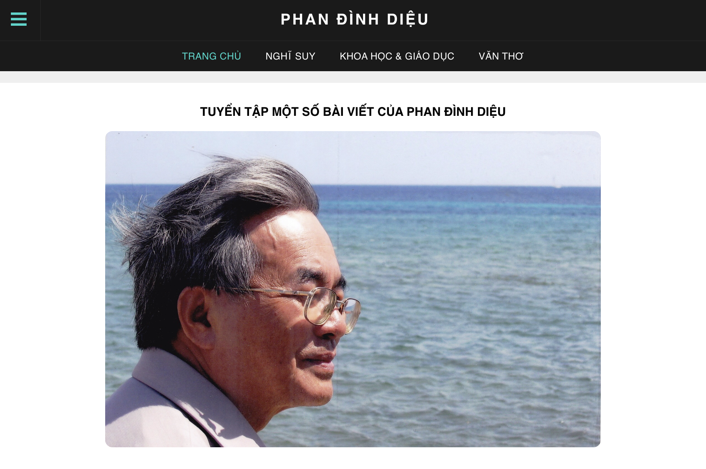
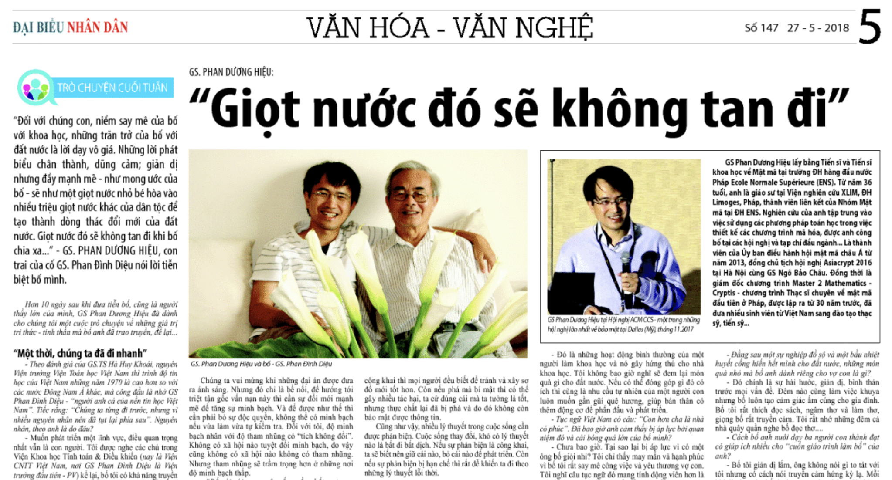
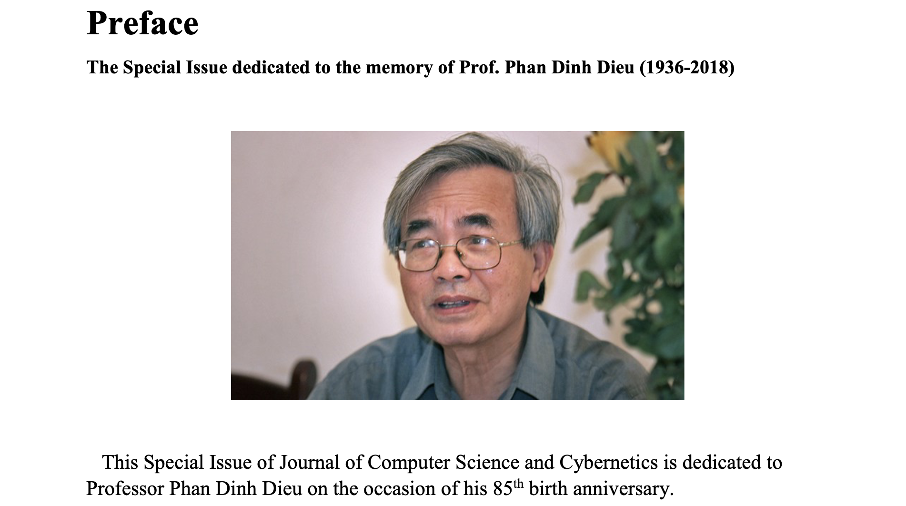

Phan Đình Diệu - Giọt nước không tan

- Phan Đình Diệu - Như tôi biết ... (Tập hợp các bài viết về Phan Đình Diệu)
- “Giọt nước đó sẽ không tan đi” (ĐBND, 5/2018)

- Số báo đặc biệt của Tạp chí Tin Học và Điều Khiển của Việt Nam kỷ niệm lần sinh thứ 85 của Phan Đình Diệu. (06/2021)

- Lời cảm ơn và lời với bố
Đọc lại một số bài viết của Phan Đình Diệu:
- « Kiến nghị về một chương trình cấp bách nhằm khắc phục khủng hoảng và tạo điều kiện lành mạnh cho sự phát triển đất nước » - Phan Đình Diệu – Tháng 2/1991.
- Về Yêu Cầu Tiếp Tục Đổi Mới Trong Giai Đoạn Hiện Nay (1997) - Bài phát biểu gây chấn động trên diễn đàn Mặt Trận Tổ quốc năm 1997. (05/2019)
- “Góp Ý Kiến Về Đổi Mới" của Phan Đình Diệu trên số cuối cùng của báo Tổ Quốc (số 10 năm 1988). (12/2016)
- Toàn văn bài viết “Khoa học hệ thống và một số ý kiến về vấn đề về cải tiến quản lý kinh tế hiện nay” (Phan Đình Diệu, năm 1981, 47 trang, viết theo đề nghị của thủ tướng Phạm Văn Đồng).
- Báo Đại Đoàn Kết đăng một số suy nghĩ của Phan Đình Diệu về hoà hợp dân tộc
- Về “Chương Trình Quốc Gia về CNTT – Kế hoạch tổng thể đến năm 2000”
- 1978 - Phan Đình Diệu: Tham luận trên Quốc hội về trách nhiệm người Quản lý khi làm ra quá nhiều phế phẩm.
{kind=link}
{kind=link}
{kind=link}
{kind=link}